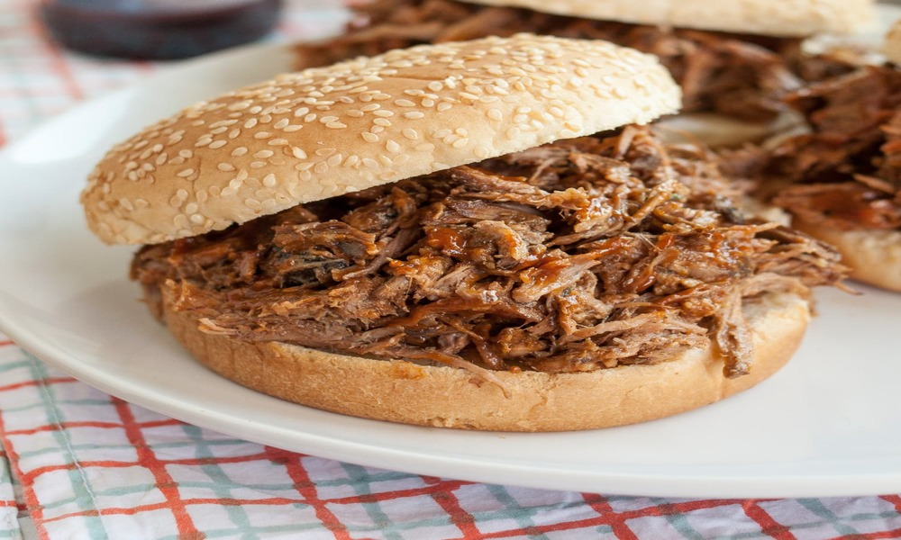

← Back to Recipes
Pulled Pork Sandwich
Time: 10 minutes (using pre-cooked pork) | Serves: 2 | Difficulty: Easy

Ingredients
- 2 cups pulled pork
- 2 burger buns
- Coleslaw (optional)
- BBQ sauce
Steps
- Warm the pulled pork with BBQ sauce.
- Toast the buns lightly.
- Pile pork on the bun and top with coleslaw if desired.